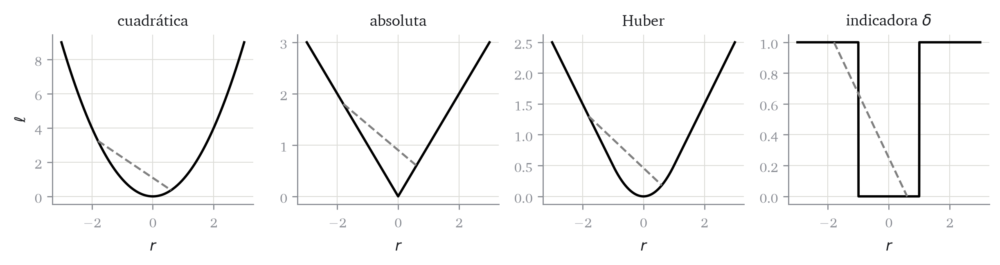

De Definición 1.3, la pérdida \(\ell\) y el riesgo empírico \(\hat{R}\). Del capítulo 3, que la verosimilitud gaussiana produce la pérdida cuadrática. Del anexo de álgebra, combinación lineal y producto escalar.
Planteamiento
En el capítulo 3 hemos obtenido una pérdida a partir de un modelo de ruido, y en el capítulo 5 construiremos un algoritmo que la minimiza. Entre las dos cosas hay una pregunta que conviene hacerse antes y no después:
¿Tiene solución el problema \(\mathop{\mathrm{arg\,min}}_{\boldsymbol{w}} \hat{R}(\boldsymbol{w})\), es única, y va a encontrarla el algoritmo?
La respuesta no depende del algoritmo. Depende de una propiedad de la pérdida, y basta comprobarla una vez para que valga para todos los métodos del curso. Ese es el contenido de este capítulo.
Una pérdida razonable que no sirve
Supongamos que estamos prediciendo el precio de alquiler de un piso y que el criterio del negocio es este: una predicción vale si se queda a menos de 50 euros del precio real, y no vale si se pasa de ahí. Traducido a una pérdida, con \(\delta = 50\): \[
\ell_{\delta}(\hat{y}, y) = \begin{cases} 0 & \text{si } \left\lvert \hat{y}- y \right\rvert \le \delta \\ 1 & \text{en otro caso.} \end{cases}
\]
El riesgo empírico correspondiente es la proporción de predicciones que fallan por más de \(\delta\). Es una cantidad interpretable, es la que pediría un director financiero y es exactamente lo que el negocio dice que le importa. Y sin embargo no la vamos a usar nunca.
Para ver por qué, dibujamos las pérdidas como función del residuo \(r = \hat{y}- y\).
fig, axs = plt.subplots(1, 4, figsize=(9.5, 2.6), sharex=True)nombres = ["cuadrática", "absoluta", "Huber", r"indicadora $\delta$"]funcs = [cuadratica, absoluta, huber, indicadora]for ax, nom, f inzip(axs, nombres, funcs): ax.plot(r, f(r), color="black", lw=1.6) ax.set(title=nom, xlabel="$r$")# una cuerda entre dos puntos del grafico a, b =-1.8, 0.6 ax.plot([a, b], [f(np.array([a]))[0], f(np.array([b]))[0]], color="grey", ls="--", lw=1.4)axs[0].set_ylabel(r"$\ell$")plt.tight_layout()

Figura 4.1: Cuatro pérdidas como función del residuo, y en cada una la cuerda que une dos puntos de su gráfica. En las tres primeras la cuerda queda por encima. En la cuarta, no.
En Figura 4.1, la cuerda discontinua de la última gráfica pasa por debajo de la función en parte del recorrido. En las otras tres queda siempre por encima. Esa diferencia geométrica, que parece un detalle de dibujo, es la que separa los problemas que sabemos resolver de los que no.
La pérdida indicadora tiene además un problema que se ve sin dibujar nada: es constante a trozos, de modo que su derivada es cero en casi todos los puntos. Un algoritmo que se oriente por la derivada no recibe ninguna información sobre hacia dónde moverse. Y no es cuestión de buscar un algoritmo mejor: minimizar este riesgo es un problema NP-duro, así que para \(p\) grande no hay ningún procedimiento eficiente conocido.
Conjuntos y funciones convexas
Formalizamos la propiedad de la cuerda.
Definición 4.1 (Conjunto convexo) Un conjunto \(S \subseteq \mathbb{R}^{q}\) es convexo si para todo par de puntos \(\mathbf{z}_1, \mathbf{z}_2 \in S\) y todo \(\lambda \in [0,1]\) se cumple \[
\lambda \mathbf{z}_1 + (1-\lambda)\mathbf{z}_2 \in S .
\]
Es decir, el segmento que une dos puntos del conjunto está contenido en el conjunto. \(\mathbb{R}^{q}\) entero es convexo, y es el único caso que necesitamos hasta el capítulo 11.
Definición 4.2 (Función convexa) Sea \(S \subseteq \mathbb{R}^{q}\) convexo. Una función \(f: S \to \mathbb{R}\) es convexa si para todo \(\mathbf{z}_1, \mathbf{z}_2 \in S\) y todo \(\lambda \in [0,1]\)\[
f\bigl(\lambda \mathbf{z}_1 + (1-\lambda)\mathbf{z}_2\bigr)
\ \le\ \lambda f(\mathbf{z}_1) + (1-\lambda) f(\mathbf{z}_2) .
\tag{4.1}\]
Es estrictamente convexa si la desigualdad es estricta siempre que \(\mathbf{z}_1 \ne \mathbf{z}_2\) y \(\lambda \in (0,1)\).
El lado izquierdo de Ecuación 4.1 es la altura de la función en un punto intermedio; el derecho, la altura de la cuerda sobre ese mismo punto. La condición dice que la función queda por debajo de sus cuerdas, que es lo que se ve en las tres primeras gráficas de Figura 4.1.
Comprobar Ecuación 4.1 a mano es incómodo. Cuando la función es dos veces derivable hay un criterio más cómodo.
Proposición 4.1 (Criterio de la segunda derivada) Sea \(f: \mathbb{R}\to \mathbb{R}\) dos veces derivable. Entonces \(f\) es convexa si y solo si \(f''(z) \ge 0\) para todo \(z\). Si \(f''(z) > 0\) para todo \(z\), \(f\) es estrictamente convexa.
Demostración. Demostramos la implicación que usamos. Supongamos \(f'' \ge 0\), de modo que \(f'\) es no decreciente. Sean \(z_1 < z_2\) y \(\lambda \in (0,1)\), y llamemos \(z_\lambda = \lambda z_1 + (1-\lambda) z_2\), que cumple \(z_1 < z_\lambda < z_2\).
Por el teorema del valor medio existen \(c_1 \in (z_1, z_\lambda)\) y \(c_2 \in (z_\lambda, z_2)\) tales que \[
f(z_\lambda) - f(z_1) = f'(c_1)(z_\lambda - z_1), \qquad
f(z_2) - f(z_\lambda) = f'(c_2)(z_2 - z_\lambda) .
\]
Como \(c_1 < c_2\) y \(f'\) es no decreciente, \(f'(c_1) \le f'(c_2)\). Además \(z_\lambda - z_1 = (1-\lambda)(z_2 - z_1)\) y \(z_2 - z_\lambda = \lambda (z_2 - z_1)\). Sustituyendo, \[
\frac{f(z_\lambda) - f(z_1)}{1-\lambda} = f'(c_1)(z_2-z_1)
\ \le\ f'(c_2)(z_2-z_1) = \frac{f(z_2) - f(z_\lambda)}{\lambda} .
\]
Multiplicando en cruz por \(\lambda(1-\lambda) > 0\) y reordenando se obtiene \(f(z_\lambda) \le \lambda f(z_1) + (1-\lambda) f(z_2)\), que es Ecuación 4.1. Si \(f'' > 0\) entonces \(f'(c_1) < f'(c_2)\) y la desigualdad es estricta.
Con Proposición 4.1 se comprueban de un vistazo las pérdidas de Figura 4.1: la cuadrática tiene \(\ell'' = 2 > 0\) y es estrictamente convexa; la de Huber tiene \(\ell'' \in \{0, 1\}\) y es convexa; la absoluta no es derivable en \(0\), pero cumple Ecuación 4.1 por la desigualdad triangular. La indicadora no cumple Ecuación 4.1, y basta el contraejemplo de la figura.
De la pérdida al riesgo
Lo que nos interesa no es la convexidad de \(\ell\) como función del residuo, sino la de \(\hat{R}\) como función de \(\boldsymbol{w}\), que es lo que se minimiza. Los dos lemas siguientes conectan una cosa con la otra.
Lema 4.1 (Composición con una función afín) Sea \(g: \mathbb{R}\to \mathbb{R}\) convexa y sea \(h(\boldsymbol{w}) = \left\langle \mathbf{a}, \boldsymbol{w} \right\rangle + b\) una función afín. Entonces \(f(\boldsymbol{w}) = g(h(\boldsymbol{w}))\) es convexa.
Es decir, \(h\) transforma una combinación convexa de vectores en la combinación convexa de sus imágenes, con los mismos pesos. Aplicando ahora la convexidad de \(g\) a los escalares \(h(\boldsymbol{w}_1)\) y \(h(\boldsymbol{w}_2)\), \[
f(\boldsymbol{w}_\lambda) = g\bigl(\lambda h(\boldsymbol{w}_1) + (1-\lambda) h(\boldsymbol{w}_2)\bigr)
\le \lambda\, g(h(\boldsymbol{w}_1)) + (1-\lambda)\, g(h(\boldsymbol{w}_2))
= \lambda f(\boldsymbol{w}_1) + (1-\lambda) f(\boldsymbol{w}_2) .
\]
Lema 4.2 (Combinación no negativa) Si \(f_1, \dots, f_m\) son convexas sobre \(S\) y \(c_1, \dots, c_m \ge 0\), entonces \(\sum_k c_k f_k\) es convexa sobre \(S\).
Demostración. Cada \(f_k\) cumple Ecuación 4.1. Multiplicando la desigualdad \(k\)-ésima por \(c_k \ge 0\) el sentido se conserva, y sumando las \(m\) desigualdades se obtiene Ecuación 4.1 para \(\sum_k c_k f_k\).
Proposición 4.2 (El riesgo empírico de un modelo lineal) Sea \(f(\mathbf{x}; \boldsymbol{w}) = \left\langle \boldsymbol{w}, \mathbf{x} \right\rangle\) y supongamos que \(\ell(\cdot, y)\) es convexa en su primer argumento para cada valor de \(y\). Entonces \(\hat{R}(\boldsymbol{w})\) es convexa en \(\boldsymbol{w}\).
Demostración. Para cada \(i\), la función \(\boldsymbol{w}\mapsto \left\langle \boldsymbol{w}, \mathbf{x}_i \right\rangle\) es afín, y \(\ell(\cdot, y_i)\) es convexa por hipótesis. Por Lema 4.1, cada término \(\boldsymbol{w}\mapsto \ell(\left\langle \boldsymbol{w}, \mathbf{x}_i \right\rangle, y_i)\) es convexo. Por Lema 4.2 con \(c_i = 1/n\), la media también lo es.
Proposición 4.2 es el resultado que se reutiliza en el resto del curso. Cada vez que aparezca una pérdida nueva bastará comprobar que es convexa en el primer argumento, cosa que suele salir de Proposición 4.1 en dos líneas, para saber que el problema de minimización está bien planteado.
Por qué la convexidad importa
Teorema 4.1 (Mínimos de una función convexa) Sea \(f: S \to \mathbb{R}\) convexa sobre un conjunto convexo \(S\). Entonces:
Todo mínimo local de \(f\) es un mínimo global.
Si \(f\) es estrictamente convexa, \(f\) tiene como mucho un minimizador.
Demostración. (1) Sea \(\mathbf{z}^*\) un mínimo local y supongamos, por reducción al absurdo, que existe \(\mathbf{z}'\in S\) con \(f(\mathbf{z}') < f(\mathbf{z}^*)\). Para \(\lambda \in (0,1]\) consideramos \(\mathbf{z}_\lambda = \lambda \mathbf{z}' + (1-\lambda)\mathbf{z}^*\), que pertenece a \(S\) por ser \(S\) convexo. Por Ecuación 4.1, \[
f(\mathbf{z}_\lambda) \le \lambda f(\mathbf{z}') + (1-\lambda) f(\mathbf{z}^*)
< \lambda f(\mathbf{z}^*) + (1-\lambda) f(\mathbf{z}^*) = f(\mathbf{z}^*) ,
\] donde la desigualdad estricta usa \(f(\mathbf{z}') < f(\mathbf{z}^*)\) y \(\lambda > 0\).
Ahora bien, \(\left\lVert \mathbf{z}_\lambda - \mathbf{z}^* \right\rVert = \lambda \left\lVert \mathbf{z}' - \mathbf{z}^* \right\rVert\), que tiende a \(0\) cuando \(\lambda \to 0^{+}\). Por tanto todo entorno de \(\mathbf{z}^*\) contiene puntos \(\mathbf{z}_\lambda\) con \(f(\mathbf{z}_\lambda) < f(\mathbf{z}^*)\), lo que contradice que \(\mathbf{z}^*\) sea un mínimo local.
(2) Sean \(\mathbf{z}_1 \ne \mathbf{z}_2\) dos minimizadores, ambos con valor \(m\). Por convexidad estricta con \(\lambda = 1/2\), \[
f\left(\tfrac{1}{2}\mathbf{z}_1 + \tfrac{1}{2}\mathbf{z}_2\right)
< \tfrac{1}{2} m + \tfrac{1}{2} m = m ,
\] lo que contradice que \(m\) sea el valor mínimo.
La primera parte es la que da tranquilidad al usar el descenso por gradiente del capítulo 5: ese algoritmo solo sabe mirar a su alrededor, de modo que como mucho puede encontrar un mínimo local. Si el problema es convexo, eso es suficiente.
La segunda parte es la que permite hablar de el estimador y no de un estimador. En el capítulo 6 veremos que el riesgo de mínimos cuadrados es estrictamente convexo si y solo si \(\mathop{\mathrm{rango}}\mathbf{X}= p+1\), y que cuando no lo es hay infinitas soluciones con el mismo error.
Dónde se aplica y dónde no
Método
Pérdida
¿Convexa en \(\boldsymbol{w}\)?
Consecuencia
Mínimos cuadrados (cap. 6)
cuadrática
sí, estricta si \(\mathop{\mathrm{rango}}\mathbf{X}= p+1\)
Las dos últimas filas conviene leerlas despacio, porque explican una asimetría del curso. En un árbol, la pérdida sigue siendo la cuadrática, pero el modelo no es lineal en sus parámetros: los cortes entran de forma discreta. Deja de aplicarse Proposición 4.2, y de hecho encontrar el árbol óptimo es un problema NP-duro. Por eso el capítulo 13 no plantea ninguna minimización global y construye el árbol corte a corte. No es una decisión de comodidad, es que no hay alternativa.
La trampa de esta semana
Convexa no quiere decir que el mínimo exista.
Ejemplo 4.1 (Una función convexa sin minimizador) La función \(f(z) = e^{-z}\) tiene \(f''(z) = e^{-z} > 0\), así que es estrictamente convexa sobre \(\mathbb{R}\). Pero \(\inf_z f(z) = 0\) y no se alcanza en ningún punto: no hay ningún \(z^*\) con \(f(z^*) = 0\).
Teorema 4.1 dice que si hay un mínimo local, entonces es global y es único cuando la convexidad es estricta. No dice que lo haya. Para garantizar la existencia hace falta una condición más, por ejemplo que el conjunto sobre el que se minimiza sea cerrado y acotado, o que la función tienda a infinito en todas las direcciones. Esta segunda es la que cumple el riesgo de mínimos cuadrados cuando \(\mathop{\mathrm{rango}}\mathbf{X}= p+ 1\), y es la razón de que allí no aparezca el problema.
En la práctica el aviso importa: si se ajusta un modelo con una penalización mal puesta y el optimizador se va a valores de \(\boldsymbol{w}\) cada vez más grandes sin estabilizarse, la causa suele ser que el mínimo no existe, no que el algoritmo funcione mal.
Notación ↔︎ código
Matemáticas
Código
Comentario
\(\ell(\hat{y}, y)\)
perdida(y_hat, y)
función del residuo en las cuatro del capítulo
\(\ell''\)
jax.grad(jax.grad(perdida))
comprobación numérica del signo
\(\hat{R}(\boldsymbol{w})\)
riesgo(w, X, y)
la que minimizará el capítulo 5
Ejercicios
Ejercicio 4.1 (Tres pérdidas) Para cada una de estas funciones del residuo \(r\), decide si es convexa y justifica la respuesta con Proposición 4.1 o con un contraejemplo.
\(\ell(r) = r^4\)
\(\ell(r) = \left\lvert r \right\rvert^{1/2}\)
La pérdida asimétrica \(\ell(r) = 3r^2\) si \(r < 0\) y \(\ell(r) = r^2\) si \(r \ge 0\).
\(\ell''(r) = 12 r^2 \ge 0\), luego es convexa. No es estrictamente convexa por el criterio de la segunda derivada en \(r=0\), pero sí lo es en el sentido de Definición 4.2, cosa que el criterio no detecta.
No es convexa. Tomando \(r_1 = 0\), \(r_2 = 4\) y \(\lambda = 1/2\), el lado izquierdo de Ecuación 4.1 vale \(\sqrt{2} \approx 1{,}41\) y el derecho \(\frac{1}{2}(0 + 2) = 1\).
Es convexa. Es dos veces derivable salvo en \(0\), con \(\ell'' = 6 > 0\) a la izquierda y \(\ell'' = 2 > 0\) a la derecha, y en \(0\) las derivadas laterales coinciden y valen \(0\), de modo que \(\ell'\) es no decreciente en todo \(\mathbb{R}\). Es la pérdida que se usa cuando quedarse corto cuesta el triple que pasarse.
Ejercicio 4.2 (Dónde falla la hipótesis)Proposición 4.2 supone que el modelo es lineal en \(\boldsymbol{w}\). Considera el modelo de un solo parámetro \(f(x; w) = \sin(w x)\) con la pérdida cuadrática, un único dato \(x_1 = 1\), \(y_1 = 0\), y por tanto \(\hat{R}(w) = \sin^2(w)\). Comprueba que no es convexa y di en qué paso de la demostración de Proposición 4.2 se rompe el argumento.
\(\hat{R}(w) = \sin^2 w\) vale \(0\) en \(w = 0\) y en \(w = \pi\), y vale \(1\) en el punto intermedio \(w = \pi/2\). Con \(\lambda = 1/2\), el lado izquierdo de Ecuación 4.1 es \(1\) y el derecho \(0\), así que la desigualdad falla. Además la función tiene infinitos mínimos locales, todos globales aquí por casualidad, pero en un ejemplo con más datos no lo serían.
El paso que se rompe es Lema 4.1: la función \(w \mapsto \sin(w x_1)\) no es afín, de modo que no transforma combinaciones convexas de \(w\) en combinaciones convexas de sus imágenes. La convexidad de la pérdida cuadrática sigue siendo cierta, pero ya no se transmite al riesgo. Es exactamente la situación de una red neuronal.
Ejercicio 4.3 (Por qué el gradiente no ayuda) Escribe el riesgo empírico asociado a la pérdida \(\ell_\delta\) de la primera sección para un modelo con un solo parámetro, \(f(x; w) = wx\). Argumenta por qué su derivada es cero salvo en un conjunto finito de valores de \(w\), y qué le pasa a un algoritmo que actualice \(w\) en la dirección opuesta a esa derivada.
El riesgo es \[
\hat{R}(w) = \frac{1}{n}\sum_i \mathbb{1}\bigl[\left\lvert w x_i - y_i \right\rvert > \delta\bigr] ,
\] una función que solo toma los valores \(0, 1/n, 2/n, \dots, 1\). Al mover \(w\), cada sumando cambia de valor únicamente cuando \(\left\lvert w x_i - y_i \right\rvert = \delta\), es decir en los dos puntos \(w = (y_i\pm \delta)/x_i\). Fuera de esos \(2n\) valores el riesgo es localmente constante y su derivada es \(0\).
Un algoritmo que actualice \(w \leftarrow w - \alpha\hat{R}'(w)\) no se mueve, porque la actualización es cero. Y en los puntos donde sí cambia, la función salta y no es derivable. Es decir, la información local sobre la que se apoya el descenso por gradiente no existe para esta pérdida, y no por un defecto del algoritmo.
Resumen
Una función es convexa si queda por debajo de sus cuerdas. Cuando es dos veces derivable, basta comprobar el signo de la segunda derivada.
Si la pérdida es convexa y el modelo es lineal en los parámetros, el riesgo empírico es convexo. Es un resultado que se comprueba una vez y se usa en todos los métodos del curso.
En un problema convexo, todo mínimo local es global, y es único si la convexidad es estricta. Es lo que hace fiable el descenso por gradiente del capítulo siguiente.